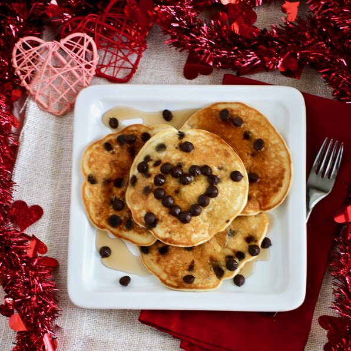

Mini Chocolate Chip Pancakes

Quick and easy snacks for breakfasts!
This is my favorite pancake recipe that I make for my family and friends. They are soft, fluffy, and very easy to make. The chocolate chips can be substituted with frozen blueberries that have been thawed. I sometimes double this recipe because they go quickly!
Ingredients
- 1 cup all-purpose flour
- 2 Tbsp white sugar
- 1 Tbsp baking powder
- 1/4 tsp salt
- 1 egg
- 1 cup milk
- 2 Tbsp butter, melted and cooled
- 1/2 cup miniature chocolate chips
Steps
- Sift flour, sugar, baking powder, and salt together in a bowl
- Beat egg into milk in a separate bowl until thoroughly combined. Pour melted butter into flour mixture; whisk in milk mixture to make a smooth batter. Fold chocolate chips into batter.
- Heat a small nonstick skillet over low heat; pour about 1/3 cup of batter into hot skillet and cover with a lid.
- Cook pancake until browned on the bottom, about 3 minutes; flip pancake and cook covered until other side is browned. Repeat with remaining batter.
Return to Main